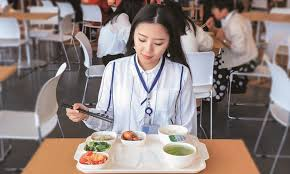
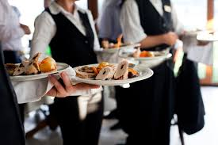

<thml>
<head>
<title>首頁</title>
</head>
<body>
是設宴款客的一種做菜安排，家中請客，又用外間的專人到自家中來做菜，食物材料由外燴服務供應者包辦，配料、味料、燉品、上湯等也如是，由外燴者在店方預備，到宴會場地架鍋，後期製作便可上桌<br> 

<hr>     
外燴是常見的餐飲解決方案，因此講究體面，費用省不了<br>

<p>
<iframe width="560" height="315" src="https://www.youtube.com/embed/M53GSk42L54" frameborder="0" allow="accelerometer; autoplay; encrypted-media; gyroscope; picture-in-picture" allowfullscreen></iframe>
<p>
<a href="index.html">連到第一頁</a>
<a href="2hd.html">連到第二頁</a>
<a href="3hd.html">連到第三頁</a>

<a href="5hd.html">連到第五頁</a>

</body>
</thml>